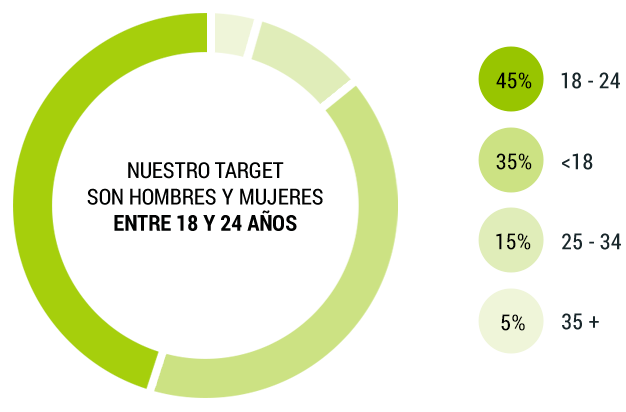

Futbolero desde la cuna.
Nací el 29 de mayo de 2014, a unos días del Mundial.
Nací el 29 de mayo de 2014, a unos días del Mundial.
Desde entonces, he contado las mejores historias,
divertido a millones de aficionados como yo
y vivido los más grandes sucesos deportivos.
Me apasioné con la Selección Mexicana en Brasil…
Siempre pensaré que no era penal.
Siempre pensaré que no era penal.
Celebré con el mundo la coronación de Alemania…
No llores por Messi, Argentina…
No llores por Messi, Argentina…
Conté la llegada de Ronaldinho a México…
desde ese día las fiestas en Querétaro son de lo mejor…
desde ese día las fiestas en Querétaro son de lo mejor…
Me vestí de merengue con la llegada de Chicharito
y hasta le dediqué una sección especial.
Si no se actualiza, es porque no juega…
Si no se actualiza, es porque no juega…
He sido frank underwood, Freddy Krueger, el Chapulín Colorado
y hasta un duende celebrando San Patricio.
También he sufrido.
Me llenó de rabia la matanza de Ayotzinapa, guardé luto por el hijo de Hugo y por el Perro Aguayo.
Me llenó de rabia la matanza de Ayotzinapa, guardé luto por el hijo de Hugo y por el Perro Aguayo.
Estoy por cumplir un año…
y esa pasión que siento por el futbol y por el deporte no sería lo mismo sin ti y todos los que han decidido visitarme…
y esa pasión que siento por el futbol y por el deporte no sería lo mismo sin ti y todos los que han decidido visitarme…
Mis números
Marzo 2015
3.2M
usuarios únicos
usuarios únicos
57M
Historias mostradas
Historias mostradas
Perfil demográfico
¿De dónde viene el tráfico?
67%
28%
5%
Perfil de usuario

15%
85%
¿Cómo interactúo con los usuarios?
242k
32k
2.6M
juan lab
Mis creativos, storytellers y analistas experimentan hasta desarrollar la formula del éxito.
En mi laboratorio la mejor es siempre la que está por llegar
En mi laboratorio la mejor es siempre la que está por llegar
Estrategia
Análisis
Idea
Desarrollo
Publicación
Formatos
Featured juan
970 x 66 / 970 x 418
Content marketing de máxima exposición a partir de espacios preferenciales en first-fold en fechas estratégicas para tu marca.
Billboard
1920 x 900
Consumo intuitivo de mis historias a profundidad con presencia para tu marca a partir
de un separador de alto impacto.
Listicle
300 x 250 / box skin
Rankings y contenidos en serie realizados para atrapar y entretener al usuario con tu
marca como promotora de los mismos.
Infografía
640 x Indefinido
Grandes historias a través de un storytelling que combina el impacto gráfico, la economía del lenguaje y la presencia para tu marca.
Lo Quiero
225 x 120
Indicador interactivo que permite al usuario identificar un producto y adquirirlo directo
desde el contenido.
Slider
640 x Indefinido
Branding que transforma imágenes a partir de la interacción del usuario con las mismas.
La naturaleza de tu marca es clave para definir el resultado de las imágenes expuestas.
Rubik
640 x 640
Las caras de los más grandes y curiosos acontecimientos deportivos. Información y
patrocinio en segundos.
Splash
414 x 736
Contenido de colección, con diseño de alto impacto visual y presencia de marca a partir
de content marketing o branding.
Indepth
1920 x Indefinido
Contenido de colección, con diseño de alto impacto visual y presencia de marca a partir
de content marketing o branding.
Native
Variable
Vincula las necesidades de tu marca con nuestros contenidos. Mis usuarios
interactuarán con tus anuncios a partir de los algorítmos de mi plataforma.
Postal
640 x 640
Imágenes para compartir que fusionan una historia gráfica con la estratégia publicitaria
de tu marca.
Formato Tradicional
300 x 250
Anuncios que ya conoces. Apuesta por mí y verás que incluso bajo estrategias
tradicionales te entrego el mejor resultado.
Juanpartner
Si tu marca genera contenidos deportivos de alto impacto para mis visitantes, eres
bienvenido.
Sé parte de mi equipo creativo presentando tus mejores historias.
Sé parte de mi equipo creativo presentando tus mejores historias.
juanfluencers
Voces distinguidas que amplifican el alcance de mis historias y las ponen ante los ojos de mis visitantes